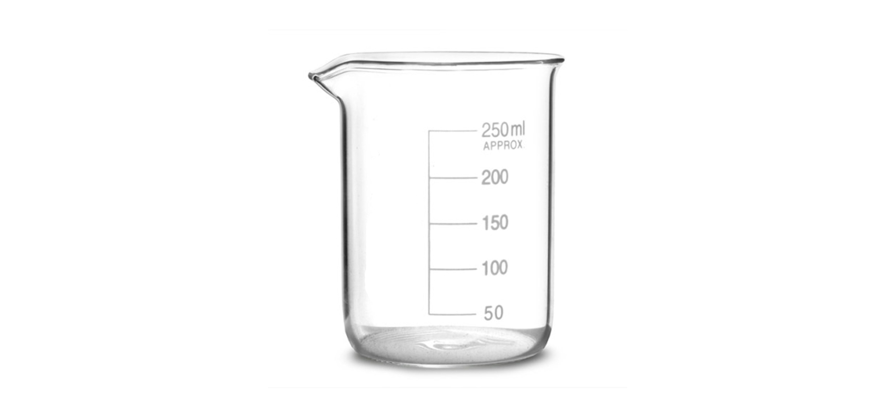
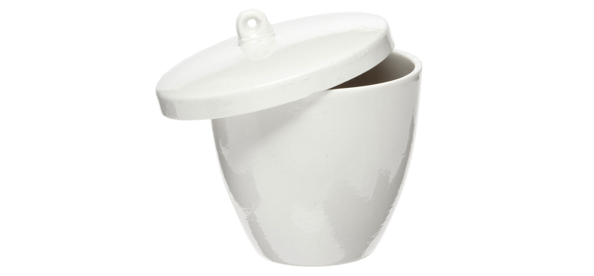
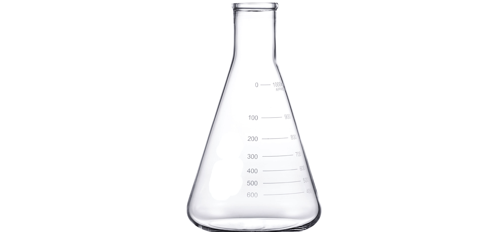
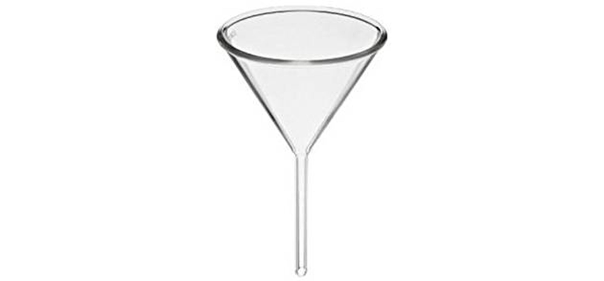

Artículos de laboratorio de calidad para brindar una solucion rapida y segura a sus requerimientos
|  |
Vaso precipitado 600 mL Precio: $6990 CLP Utensilio cilíndrico hecho de vidrio de borosilicato, con un fondo plano y la abertura superior con un borde alrededor y un pico. El pico en el borde ayuda a verter correctamente las soluciones y no tiene ninguna cubierta en la parte superior. La mayoría de las veces se utilizan vidrio reloj para cubrir sus soluciones. Son de diferentes tamaños y se utilizan para contener, calentar o mezclar sustancias con la medida adecuada. Aunque vienen con calibraciones graduadas, no están diseñados para cálculos precisos de soluciones. |
|  |
Crisol de porcelana Precio: $9990 CLP Crisol de porcelana, se utilizan para almacenar y calentar sustancias cuando es necesario hacerlo a altas temperaturas, ya que el vidrio borosilicato no siempre es adecuado para experimentos con temperaturas tan altas. |
|  |
Matraz de Erlenmeyer 1000 mL Precio: $8990 CLP Matraz cónico, tiene un fondo plano y un cuello largo y angosto, lo que permite mezclar fácilmente las soluciones sin derramar el contenido. Dado que el matraz tiene un cuello estrecho y largo, también se utiliza para calentar suavemente el contenido del interior con un leve movimiento giratorio del matraz. El matraz también se puede tapar con una tapa de goma o un corcho. Se debe recordar nunca calentar ningún matraz con la tapa puesta, ya que provocará una acumulación de presión y gas dentro del matraz cerrado lo que producirá explosiones. |
|  |
Embudo Precio: $2990 CLP Los embudos son equipos necesarios para verter sustancias y soluciones en tubos de ensayo de boca estrecha y matraces cónicos, además de ser útiles para filtrar soluciones. Exiten de diversos materiales, los más comunes son de borisilicato y polipropileno. |